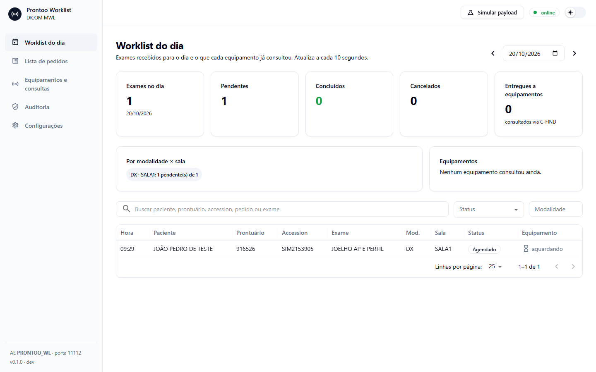
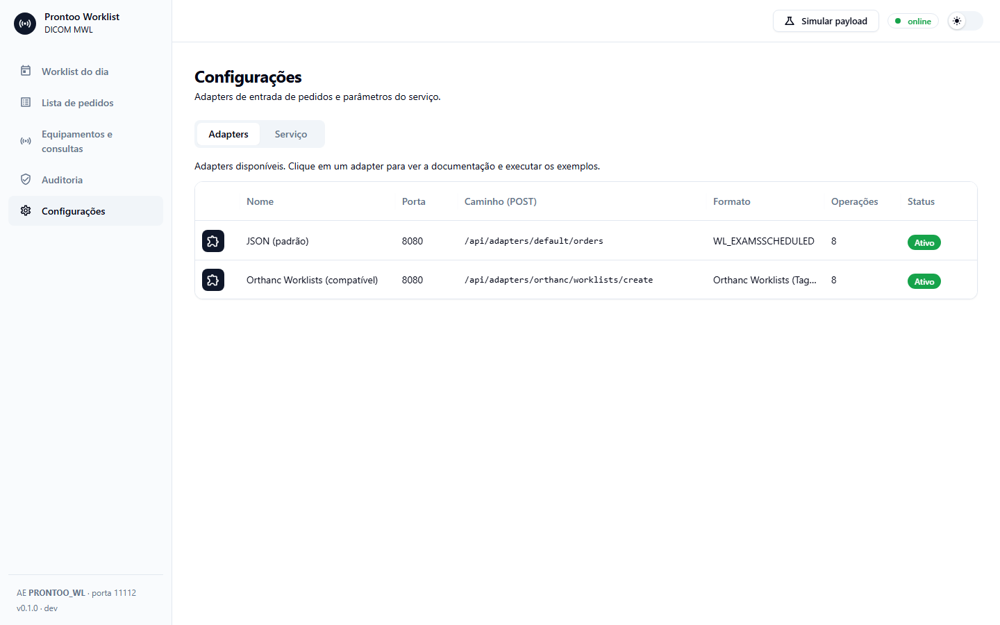

A fila de exames de imagem do hospital, visível, segura e registrada.
Versão 0.1.0 pronta para piloto
Resumo
Em um minuto
O que é
O sistema que diz a cada aparelho (raio-X, tomógrafo, ultrassom) quais exames ele deve fazer, com os dados do paciente já preenchidos.
Por que agora
Hoje esse papel é de um sistema de terceiros (TZION), sem tela, sem histórico e sem saber se o exame foi feito.
O que entregamos
Sistema próprio do Prontoo, compatível com o que o hospital já usa, com tela de acompanhamento e histórico que não pode ser apagado.
Estado
Pronto para piloto em rede interna. Instaladores para Windows, Linux e Docker publicados.
O que precisamos
Três decisões para colocar no hospital (último slide).
O problema hoje · CSPM
A fila existe, mas ninguém a enxerga
20.352
pedidos "pendentes" acumulados
De dez/2023 a ago/2026, nenhum foi marcado como feito. Não dá para saber o que foi realizado.
0
telas de acompanhamento
Recepção e gestão não veem a fila. Problema só aparece quando o aparelho não acha o paciente.
0
registros de quem mudou o quê
Alterações e cancelamentos não deixam rastro. Difícil auditar e responder a questionamentos.
Fonte: levantamento do próprio fornecedor (Sintaxe), 31/08/2026. Além disso, quem envia pedidos precisa de acesso direto ao banco de dados do hospital.
A solução
Como funciona
Sistema do hospitalRecepção libera o exame (hoje: Sintaxe)
→
Worklist ProntooConfere os dados, organiza a fila, registra tudo
→
AparelhosRecebem o exame com o paciente preenchido
→
Arquivo de imagensQuando a imagem chega, o exame é dado como feito
Nada muda para o aparelho
Mesmas informações, no mesmo formato de hoje. Sem reconfigurar equipamento.
Nada é perdido
Pedidos ficam guardados como hoje. Cancelar não apaga: marca e registra o motivo.
Sabe o que foi feito
Exame concluído pela tela ou automaticamente quando a imagem chega (opcional).
Na prática
A fila do dia, em uma tela

Exames do dia, pendentes, concluídos e cancelados
Qual aparelho já buscou cada exame
Lista de todos os pedidos, não só os de hoje
Histórico completo de cada exame
Funciona no computador e no celular, tema claro e escuro
Integração
Conecta com o que já existe

Sintaxe Aceita os pedidos exatamente no formato que o Sintaxe já usa. Troca simples, sem retrabalho do fornecedor.
Orthanc Fala a mesma "língua" do Orthanc, o arquivo de imagens de código aberto mais usado. Ferramentas feitas para ele funcionam aqui.
Documentação na própria tela Cada conector mostra exemplos que podem ser testados ali mesmo.
Segurança e qualidade
Feito para não falhar em silêncio
57
testes automáticos
Rodam a cada mudança, simulando aparelhos, o Sintaxe e o Orthanc.
100%
das alterações registradas
Quem, quando, por quê e o dado original, com prova de que nada foi adulterado.
0
dados alterados em silêncio
Dado inválido é recusado com o motivo. Nunca é cortado ou "corrigido".
~9 MB
de memória
Roda em qualquer computador do hospital, sem servidor dedicado.
Implantação
Instala em minutos
🪟
Windows
Instalador de um clique. Liga sozinho com o computador e se recupera se cair. Atualizar é rodar o instalador novo.
🐧
Linux
Um arquivo e um comando. Ideal para servidores do hospital.
📦
Docker
Para quem já usa contêineres na infraestrutura.
Versão 0.1.0 publicada em 19/10/2026, com verificação de integridade de cada arquivo.
Transparência
O que ainda falta
Atenção
Sem login na tela ainda. Até definirmos, usar só na rede interna do hospital.
Decidir
Como o Sintaxe envia os pedidos: continuar gravando no banco (e nós lemos) ou chamar o Worklist Prontoo direto.
Validar
Teste com os aparelhos reais da CSPM: nomes com acento, tipos de exame e salas.
Pendente
Assinatura digital do instalador (o Windows mostra um aviso na primeira vez) e publicação no Docker Hub.
Próximos passos
Três decisões para ir ao hospital
1. Login da telaUsar o mesmo login do Prontoo ou um próprio do Worklist.
2. Entrada dos pedidos na CSPMAutorizar a leitura do banco atual (sem mudar nada no Sintaxe) ou combinar com o Sintaxe a chamada direta.
3. PilotoEscolher um aparelho e uma data para rodar em paralelo com o sistema atual, sem desligar nada.
Perguntas Q04, Q07 e Q13 nas specs. Repositório privado: github.com/ks-labs/worklist-web.